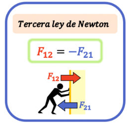

The Third Law of Newton or Principle of Action and Reaction is the third theoretical precept formulated by the British scientist Isaac Newton (1642–1727) in his work Philosohiae naturalis principia mathematica (“Mathematical Principles of Natural Philosophy”) in 1687, influenced by the previous studies of Galileo Galilei and René Descartes.
This work, together with Newton’s three laws, is considered a fundamental text of modern physics.
The Third Law of Newton states, in the scientist’s original Latin:
“Actioni contrariam semper & æqualem esse reactionem: sive corporum duorum actiones in se mutuo semper esse æquales & in partes contrarias dirigi”
Which translates to:
“To every action corresponds an equal but opposite reaction: which means that the mutual actions of two bodies are always equal and directed in opposite directions.”
This law explains that forces in the world always occur in pairs: an action and a reaction, the latter with the same magnitude but opposite direction. This means that when one body exerts a force on another, the second responds with a force of equal magnitude but opposite direction.
Newton was the first to formally present the idea that forces do not exist in isolation but always occur as mutual and instantaneous pairs. In the Principia, he stated his third law concisely: “With every action, there is always an equal and opposite reaction.” This formulation was revolutionary because it suggested a fundamental symmetry in nature: the interaction between two bodies implies an exchange of forces of equal magnitude and opposite direction, acting on different bodies.
The historical context of this law is crucial because it established a universal framework for mechanics. Unlike earlier conceptions, which often separated earthly motion from celestial motion, Newton’s laws applied to the entire universe. The third law was key to explaining phenomena such as rocket propulsion (a classic example used by NASA) and the way planets exert forces on the Sun while the Sun exerts forces on them. By establishing this principle of action and reaction, Newton provided a coherent and mathematically rigorous understanding of how objects interact in the cosmos, forming the basis of modern physics for centuries.

Formula of the Third Law of Newton
The third law of Newton (or principle of action and reaction) states that if one body exerts a force on another body, the first body receives a force applied by the second body of the same value but opposite direction. Therefore, the third law of Newton can be expressed using the following formula:

Where F12 is the force exerted by body 1 on body 2, and F21 is the force exerted by body 2 on body 1.
For Newton’s third law to be fulfilled, both forces must have the same magnitude but opposite signs, or in other words, the forces must be opposite.
The first force applied is called the action force. Likewise, the force that originates as a reaction to the first force is called the reaction force.
Examples of how to use it
If a vertical downward force of 15 N is applied to an object with a mass of 4 kg, what force must the ground exert for the object to be in equilibrium?
Therefore, the sum of the two forces pushing the object downward is:
In conclusion, the ground must exert a vertical upward force of 54.24 N on the object for it to be in equilibrium.